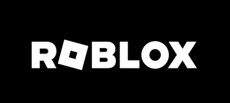

Hi!
I'm Sander van Rossen, I love optimizing code, make tools easier to use, improving workflows and polishing games.
I'm Sander van Rossen, I love optimizing code, make tools easier to use, improving workflows and polishing games.
| BACKGROUND |
I've been programming since before I was a teenager. I have decades of experience in researching, designing and implementing algorithms. I love games, how they are made, and all the technology, disciplines and tools that have to do with it. |
|
| EXPERIENCE |  |
At Briganti I optimized several subsystems such as terrain editing and implemented new features for Dungeon Alchemist such as a decal rendering and placement. |
|  | At Roblox, I helped optimize code, and implemented runtime mesh editing functionality for people making games on the roblox platform. Additionally I held internal presentations on data orientated design principles. | |
 |
At Unity I worked in several teams over the years, such as the animation team, the asset pipeline team, the scene management team and the core foundation team. | |
 |
As an indie game developer I helped create the iOS game "Gunship X", which was written using Unity. | |
As an indie game developer I worked on the hit iOS game "Zombie Gunship" using a custom engine we wrote. As far as we know this was the first IOS game with post processing.The IPhone 3 was considered a high end target platform at the time. |
||
| SIDE PROJECTS | In my spare time I've been working on a UI framework designed to quickly make editors and tools. | |
 |
I independently created realtime-CSG. A level editor plugin for use within Unity. The editing of the level uses Constructive Solid Geometry (CSG) for which I developed an iterative, realtime algorithm for. |
|
| In 2003 I wrote a minecraft clone in C++, that rendered the world in only 2 drawcalls, using 1gb of memory, with streaming / far views and sorted transparency, which at the time ran at less than 1ms per frame. | ||
| PRESENTATIONS |  |
A GDC talk I gave on a novel Realtime Constructive Solid Geometry algorithm I developed. |
| ARTICLES | Here I wrote about a highly optimized, hard to break, data structure for storing topology with meshes. | |
 |
In the book "Game Development Tools" I wrote an article about "Realtime Constructive Solid Geometry" | |